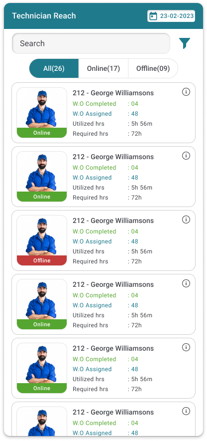
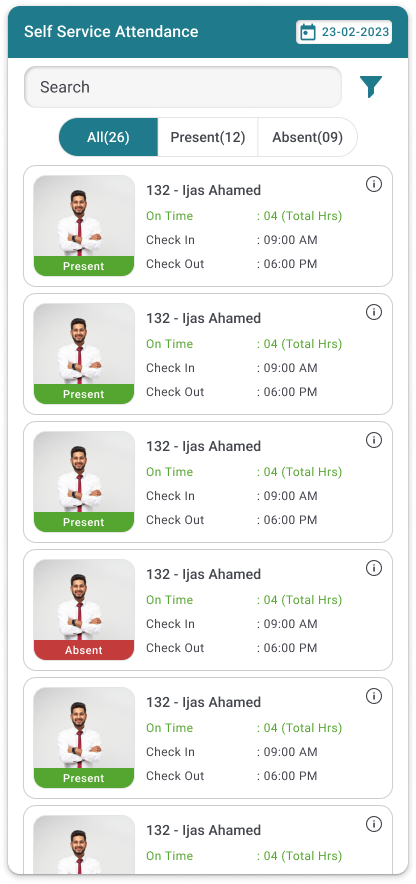
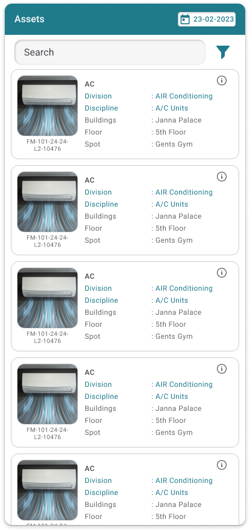

Map tracking

Technician reach

Attendance

Asset management
Designing a map-centric mobile experience for real-time technician tracking, workforce attendance monitoring, and asset management across multi-building facilities.



GIS is a location-intelligence module within Nanosoft's enterprise facility management platform. It enables property managers to visualise technician locations, monitor workforce attendance in real-time, and manage physical assets across multiple buildings — all through map-based interfaces on mobile.
Facility managers needed to answer critical operational questions quickly: Where are my technicians? Who's on-site? Which assets need attention? The existing workflow relied on phone calls and spreadsheets.
I designed each module to serve a distinct operational need while maintaining a consistent design language and shared search/filter patterns across all views.
Interactive map interface with colour-coded triangular markers (green = active, red = alert, blue = idle) showing technician and asset positions. Includes onboarding flow, compass/radar view for proximity, and building-level drill-down navigation.
Real-time workforce monitoring with online/offline status indicators, performance metrics (completed, assigned, utilised hours, required hours), and drill-down to individual work order history with SLA tracking across PPMEs, Analysts, and Execution categories.
GPS-verified attendance tracking with present/absent filtering, check-in and check-out timestamps, total trip data, and an employee detail view with "Last Seen" and "Checked In" markers plotted on Google Maps for location verification.
Building-level asset inventory showing equipment type, location (building/floor/room), operational status, maintenance data, and cost tracking (extra hours, extra costs). Searchable and filterable with consistent card-based layout.
A shared visual language ensured that once a user learned one module, they understood all four. The system is built around three pillars: a consistent colour palette, a status badge system, and a repeatable card anatomy.
Dot + label badges use colour, text, and shape together. This meets WCAG contrast requirements and works for colour-blind users.
Avatar → Name → Status → 4 metrics. Once learned in one module, this pattern repeats identically across all four.
The Technician Reach module was the most complex design challenge: each technician card needed to surface 6+ data points without overwhelming the user.
Segmented control at the top lets managers instantly filter by technician availability. Counts in each tab (All 24, Online 17, Offline 09) provide at-a-glance workforce overview.
Green "Online" and red "Offline" badges on each technician card use the universal traffic-light metaphor — no learning curve needed for new users.
Each card surfaces: M.O Completed, M.O Assigned, Utilized Hrs, Required Hrs, Sh.Mon — all visible without tapping. Designed to reduce cognitive load by grouping related metrics.
Tapping a technician reveals their full profile, work order history, SLA compliance, and category breakdown (PPMEs, Analysts, Execution) — keeping the list view clean.
SLA Hours and Utilized Hrs use green/red colouring to show at-risk vs on-track work orders — enabling managers to prioritise attention without reading every number.
Search bar with filter icon appears identically across all modules — once a user learns the pattern in one module, it transfers to every other module.
Why two markers on one map?
The employee detail view shows two map markers simultaneously — a green “Last Seen” marker and a red “Checked In” marker. This deliberate dual-marker pattern lets supervisors instantly answer the most critical operational question: is this person still where they checked in?
A single marker cannot answer this question. If both markers overlap, the employee is on-site. If they diverge, the employee has moved — raising a safety or compliance flag requiring immediate action.
I used colour-coded triangular markers (not pins) to differentiate this from consumer maps. Triangles convey directionality and status — green for active, red for alert, blue for idle — and remain distinguishable at small sizes on mobile.
Each module starts with a Search Criteria panel (Select Type, category dropdowns, online/offline toggle). This pre-filters data before loading, preventing information overload and reducing server calls on mobile networks.
Instead of tables (which don't work on mobile), I designed horizontally-structured cards that pack 6+ data points into each row. Colour and position create scannable visual patterns without requiring users to read every label.
The attendance detail view shows both "Checked In" (red marker) and "Last Seen" (green marker) on the same map. This dual-marker pattern instantly reveals whether an employee is still at their check-in location — a key operational question.
I built a shared component library across all four modules: teal header bars, consistent search patterns, avatar + name + metrics cards, and a common date range picker. This reduced design-to-development handoff time and ensured visual coherence.
The app opens with a multi-screen onboarding flow that introduces the GIS concept before map interaction. Each step builds on the previous, preventing new users from feeling overwhelmed by a full map view on first launch.
Map interfaces demand a fundamentally different approach from form-based apps. The biggest lesson was learning to use visual encoding (colour, shape, position) as the primary information channel, with text as a secondary reference. This dramatically reduced the cognitive cost of scanning operational data.
I'd invest more in interactive map prototyping to test marker density and zoom-level transitions. I'd also explore clustering algorithms for scenarios with 50+ technicians, and add heatmap overlays to visualise workload distribution across buildings.
This project directly exercised alarm management principles — using colour (green/red/blue), position, and size to create an at-a-glance status system. The same visual hierarchy principles apply to medical device alarm displays and industrial control room HMIs.
Translating multi-dimensional operational data (location + status + time + SLA + cost) into scannable mobile interfaces is directly transferable to MedTech dashboards, clinical decision support tools, and any domain where data density meets mobile constraints.